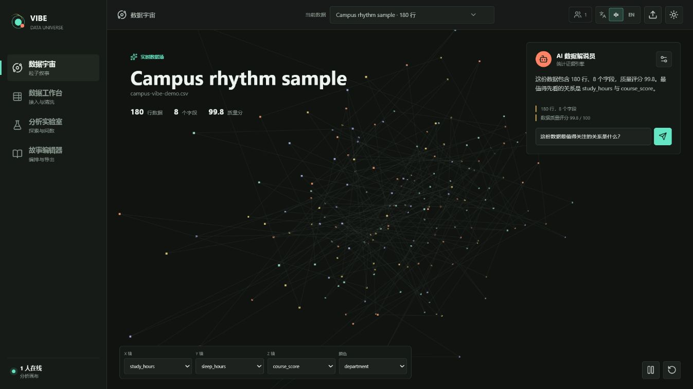
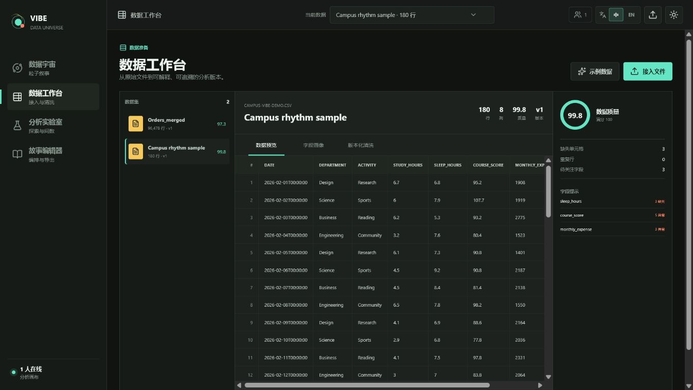
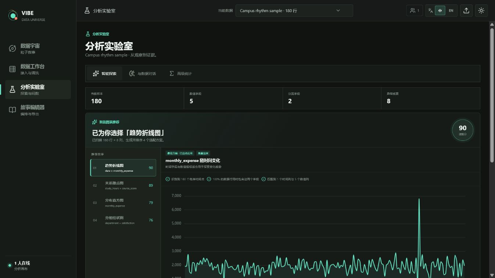
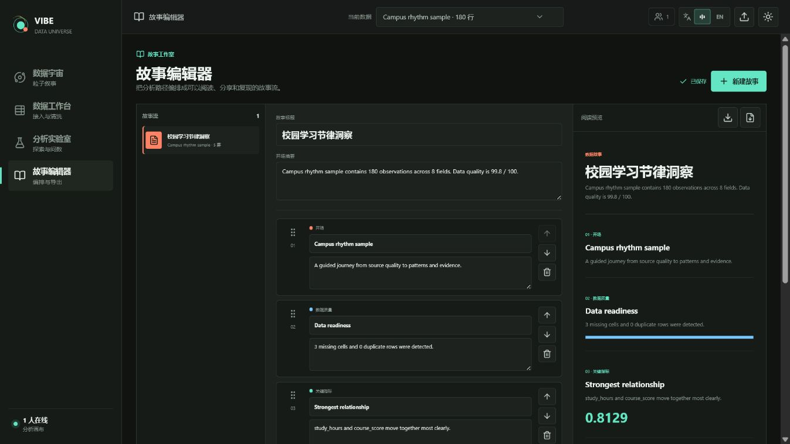
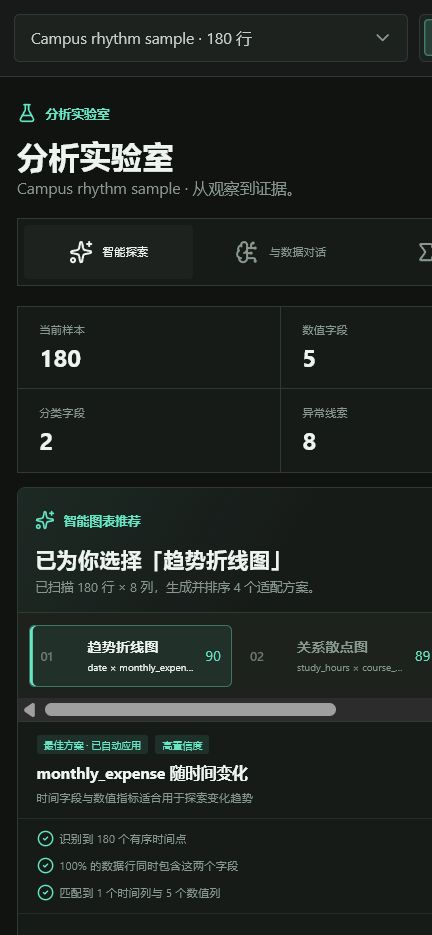

数据宇宙
每一行数据映射为 3D 粒子，支持旋转、缩放、自动巡航、轴与颜色映射、粒子检查和 AI 解说。
本地优先 · 免登录 · 可导出报告
Vibe Data Universe 面向大学生、科研人员与数据分析初学者， 将文件接入、数据画像、版本化清洗、智能分析、3D 粒子叙事与报告导出 组织成一条连续工作流。

从原始文件到可分享的报告，一条流水线完成。
每一行数据映射为 3D 粒子，支持旋转、缩放、自动巡航、轴与颜色映射、粒子检查和 AI 解说。
拖拽接入 CSV、Excel、JSON、TXT，查看分页数据、字段画像、质量问题和修订历史。
自动 EDA、智能图表推荐、图表联动、相关性矩阵、异常检测、自然语言问数与高级统计。
把指标、图表、质量信息和叙述编排成故事流，一键导出 HTML 与 PDF 报告。
默认 SQLite 与本地文件系统，不要求登录；未配置大模型时仍可完整使用统计分析能力。
路由按导航意图预加载，查询失败原地重试，异常有全局恢复页，删除操作二次确认。
点击查看大图。




七步，从文件到报告。
CSV / Excel / JSON / TXT，拖拽即传，自动嗅探编码与分隔符。
字段类型推断、统计画像与数据质量评分。
每一步清洗生成新修订，随时回退对比。
EDA、自然语言问数、回归 / 检验 / 聚类等高级统计。
数据行变成 3D 粒子，在宇宙中漫游观察结构。
把指标、图表与文字组织成可叙述的故事流。
导出 HTML 或 PDF，直接分享结论。
需要 Python 3.13、Node.js 24 与 uv。
cd backend
uv sync --frozen --extra dev
uv run alembic upgrade head
uv run uvicorn app.main:app --reload --port 8000cd frontend
npm ci
npm run dev
# 打开 http://127.0.0.1:5173docker compose up --build
# Web: http://127.0.0.1:5173
# API 文档: http://127.0.0.1:8000/docs